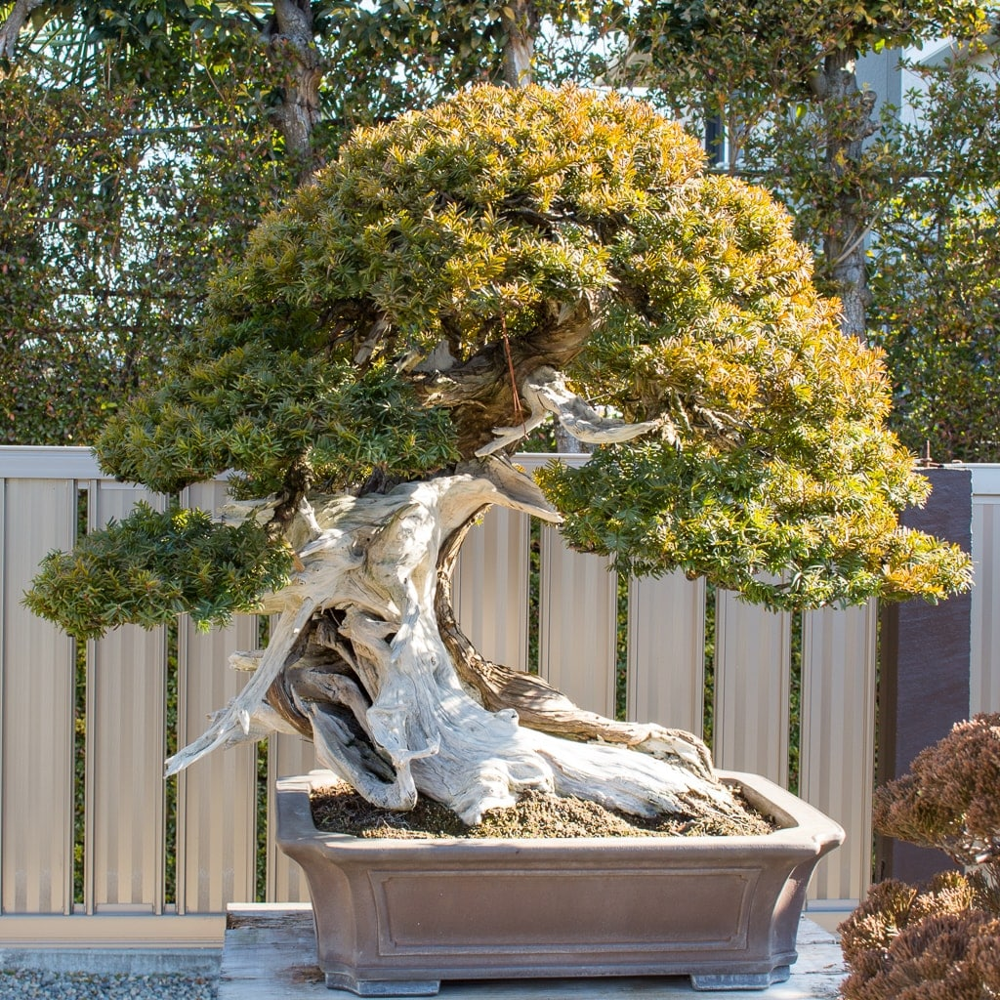

Bonsai Care
Bonsai cultivation and care requires techniques and tools that are specialized to support the growth and long-term maintenance of trees in small containers. Bonsai trees can live for hundreds of years if they are consistently well cared for. With proper care, your bonsai will remain healthy, beautiful and miniature for many years to come. Since your bonsai is a living miniature tree, it will increase in beauty as it matures through the years.
-----------------------------------------------------------------------------------------------------------------------------------------------------------------------------------------------------------------------------------------------------
Placement
Once nightly lows begin approaching the 40 degree mark, it is time to bring your indoor bonsai inside. This should be done gradually over a period of several weeks. Bring it in for a few hours the first time, slowly increasing the time it spends indoors until it becomes acclimated to its new environment. The ideal indoor location is on a window sill facing south. An east or west exposure is second best. A northern exposure will work, but will necessitate the use of "grow lights" to provide sufficient light to keep your bonsai healthy. Four to six hours of sunlight per day should suffice. If you can provide more, so much the better.
Watering
The watering of your bonsai must never be neglected. Apply water when the soil appears dry -- never allow the soil to become completely dry. If your bonsai is receiving full sun, it may be necessary to water once a day. This schedule may vary with the size pot, type of soil and type of bonsai tree you own. Evaluate each tree's water requirements and adjust your watering schedule to accommodate it. It is a good idea to use a moisture meter until you get to know the requirements of your bonsai tree. Watering should be done with a watering can or hose attachment which should dispense the water in a soft enough manner as not to disturb the soil. Water should be applied until it begins running out of the holes in the bottom of your pot. A good rain is usually a sufficient watering.
Humidity
During the cold months, when your bonsai is inside, we recommend placing it in a shallow tray filled with a layer of gravel with water added. This provides extra moisture around the tree as the water evaporates and reduces the amount of moisture lost to modern heating systems.
Fertilizing
Fertilizing is also necessary if your bonsai is to remain healthy and beautiful. Since your bonsai is growing in such a small amount of soil it is necessary to replenish the soil's supply of nutrients periodically. Any general-purpose liquid fertilizer will do fine and is available at most garden centers. We suggest that fertilizers be used at half their recommended strength. Fertilizer should be applied at least once a month except during winter. Your bonsai will also respond well to foliar feeding, with a water-soluble fertilizer applied every other month as a spray.
Training
This brief explanation of basic care does not cover training. Training deals with the art of bonsai and should be thoroughly understood before undertaking -- or left to a professional. However, most of the true bonsai trees you find have already been through their training period, thus requiring only periodic trimming and pinching to remain miniature.
Trimming & Pinching
Trimming and pinching keep your tree miniature. Pinch and trim back the new growth to the farthest safe point. Never should all of the new growth be removed. A little should be left to sustain the health of the tree. Tropical and sub-tropical trees used for bonsai will require periodic pinching and trimming throughout the year. Since different trees grow at different rates, it is necessary to evaluate each tree’s rate of growth and adjust your trimming and pinching to accommodate it.
Repotting
Repotting must be performed periodically on all bonsai when their root system has filled the pot. The reasons for repotting are to supply your tree with fresh soil, and to encourage a more compact root system. As a rule, most deciduous trees require repotting every two or three years, while evergreens only need to be repotted every four or five years. Since trees grow at different rates, this schedule will not always hold true, therefore, you should examine your tree's root system each year to determine if it has become pot-bound.